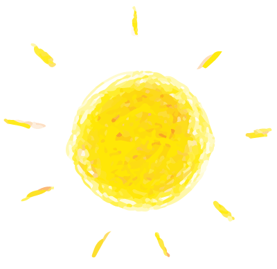
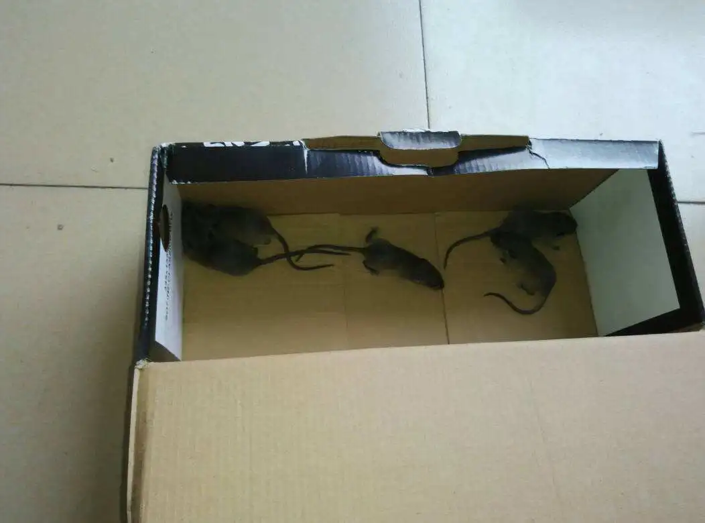
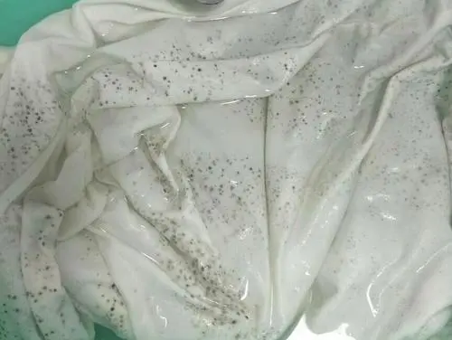

有一种美好的相遇，叫久别重逢

新学期
新希望
酷暑的余温刚刚消散
开学的号角便已吹响
时隔二百一十多天的等待
终于迎来了期待已久的重逢
那么，你的重逢
是什么画风呢？
同学相见不相识
嘿，你刚回来吗？
emmmmm哦~啊哈哈哈是是是，刚回来。（内心os：这是谁来着？）
哪里不太对，但又说不上来。
感觉自己还是个新生


学长好，请问8号楼在哪块儿？
学长？？？对哦，我已经大二了。
“心慌意乱”想开学
是否会老鼠成窝，被褥发霉？


时隔二百一十多天
回到寝室的同学
纷纷表示自己一开门就傻眼了
老鼠横行，被褥发霉，乌龟干死
甚至还有厕所长出辣椒....
总之，惨不忍睹
~
同学们是否会有一点小忐忑
我们的寝室会是什么样子的呢？
答案已经揭晓
不知道悲剧有没有发生呢。
可能离家会伴着一些感伤
但回到学校将会拥有更多的快乐
归心似箭，归期已来
有一种美好的相遇，叫久别重逢
—END—
排版|辛学敏
文字|辛学敏
长按识别二维码关注我们~